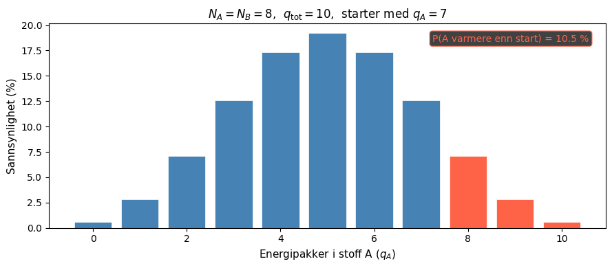
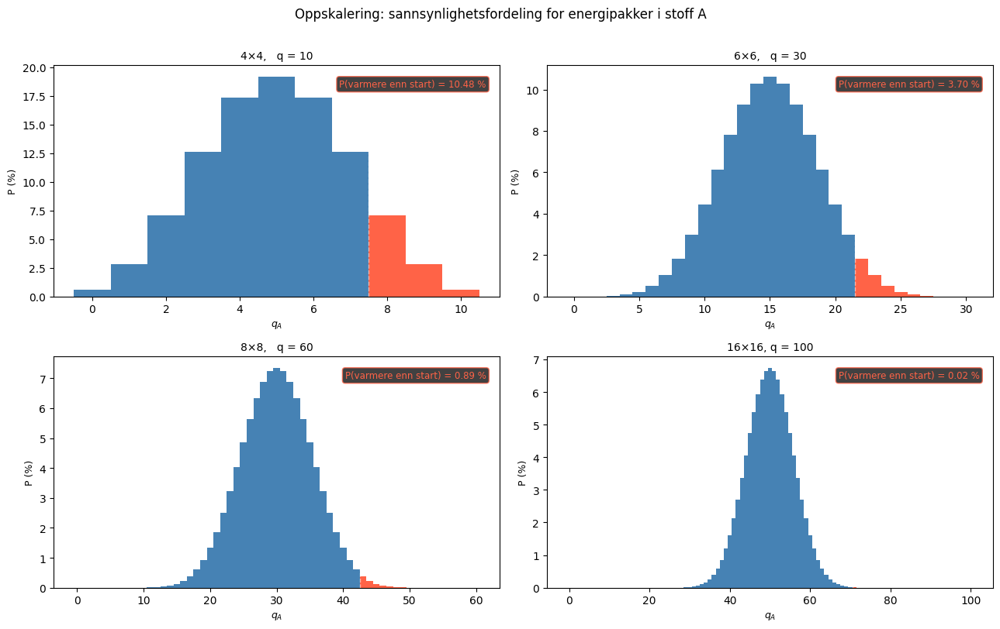
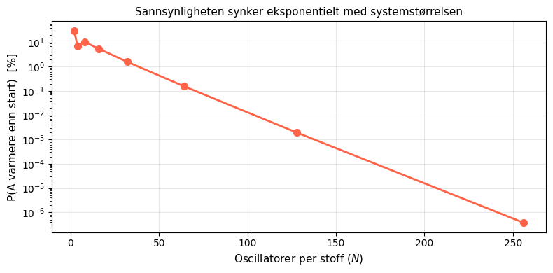

Entropi og termodynamikkens 2. lov#
Læringsutbytte
Etter å ha arbeidet med dette temaet skal du kunne:
Forklare hva en mikrotilstand og en makrotilstand er, og gi eksempler på begge.
Beregne antall mikrotilstander \(\Omega\) for et fast stoff ved hjelp av kombinatorikk.
Forklare Boltzmanns entropidefinisjon \(S = k_\mathrm{B} \ln \Omega\) og hva den betyr.
Forklare med sannsynlighetsargumenter hvorfor energi spontant sprer seg fra legemer med høy til legemer med lav temperatur.
Koble den statistiske forklaringen av entropi til termodynamikkens 2. lov.
Hva er entropi?#
Entropi er ett av de begrepene i kjemien som lett kan virke abstrakt og unnvikende. I klassisk termodynamikk defineres entropi gjerne gjennom varmeoverføring og temperatur:
der dS er endringen i entropi, q er varmen som er overført, og T er temperaturen i kelvin.
Uttrykket ovenfor har en viss intuitiv appell: varme fordelt på temperatur, der høy temperatur «demper» entropiøkningen — å varme opp noe som allerede er varmt «betyr» mindre i den forstand at entropien ikke øker like mye. En analogi til dette kan være at én ekstra krone betyr mer for en fattig person (lav temperatur) enn for en rik person (høy temperatur). Samme mengde varme gir altså mer entropi når den overføres ved lav temperatur enn ved høy.
Denne definisjonen beskriver derimot kun entropi på makroskopisk nivå, altså uten å fortelle oss hva som skjer på molekylnivå. Det lar oss ikke besvare spørsmål som hvorfor entropien øker i spontane prosesser, og hva som fysisk driver en prosess i én bestemt retning?
Svaret kom fra den østerrikske fysikeren Ludwig Boltzmann på slutten av 1800-tallet. Han viste at entropi har en dyp statistisk betydning: entropi er et mål på antall mikroskopiske måter et system kan realisere sin makroskopiske tilstand på. Jo flere måter, desto høyere entropi — og desto mer sannsynlig er tilstanden.
For å forstå dette trenger vi å skille mellom to typer tilstander.
Makrotilstander og mikrotilstander#
En makrotilstand beskriver systemet med størrelser vi kan måle i laboratoriet: temperatur, trykk, volum, total energi. En mikrotilstand er én bestemt måte energien er fordelt på molekylnivå, konsistent med den observerte makrotilstanden.
La oss se på et enkelt eksempel utenfor molekylverdenen, der vi kaster fire mynter. Makrotilstanden «to kron» kan realiseres på \(\binom{4}{2} = 6\) forskjellige mikrotilstander — avhengig av hvilke to mynter som viser kron. Makrotilstanden «fire kron» har bare én mikrotilstand. Dette har vi illustrert nedenfor, der antallet mikrotilstander for makrotilstandene en «kron», «to kron» og «tre kron» er representert med de mulige makrotilstandene dette tilsvarer. Tegn gjerne mik

Underveisoppgave
Skriv makrotilstandene som mangler i figuren ovenfor, og tegn alle mulige mikrotilstander for disse makrotilstandene.
Vi betegner antall mikrotilstander for en gitt makrotilstand som \(\Omega\) (gresk stor omega). Boltzmanns idé var å knytte dette direkte til entropi:
der \(k_\mathrm{B} = 1{,}381 \times 10^{-23}\) J/K er Boltzmanns konstant. Denne likningen er så sentral at den er hogd inn på Boltzmanns gravstein i Wien.
Logaritmen gjør at entropien er additiv: for to uavhengige delsystemer A og B er \(\Omega_\mathrm{tot} = \Omega_A \cdot \Omega_B\), og dermed \(S_\mathrm{tot} = S_A + S_B\).
Boltzmann-konstanten er med i uttrykket for entropi utelukkende fordi vi måler temperatur i kelvin — en skala valgt av praktiske grunner lenge før noen visste at temperatur er et mål på molekylenes energi. k\text{B}_ er rett og slett en omregningsfaktor mellom kelvin og joule: \(1 \text{ K} = 1{,}38 \times 10^{-23} \text{ J}\). Hadde vi målt temperatur direkte i energienheter, ville entropien vært bare \(S = \ln \Omega\) — uten noen konstant.
En enkel modell#
For å gjøre den statistiske definisjonen av entropi litt mer konkret, trenger vi et modellsystem. Vi bruker her Einstein-modellen for et fast stoff: et fast stoff består av \(N\) uavhengige atomer, der hvert atom henger sammen med naboatomer med fjærer og kan derfor vibrere i tre dimensjoner. Som du kanskje husker, er energi alltid kvantisert: atomene kan bare inneholde et heltall energienheter, \(0, 1, 2, 3, \ldots\) ganger en bestemt energi \(\varepsilon\).
Vi kaller disse energienhetene energipakker og sier at systemet har \(q\) pakker fordelt på \(N\) atomer. Spørsmålet er: på hvor mange måter kan dette gjøres?
Energier og atomer#
Dette er et klassisk kombinatorikkproblem. Tenk på \(q\) energipakker som stjerner (\(\star\)) og \(N\) atomer som energien kan være fordelt hos. Spørsmålet er: på hvor mange måter kan vi fordele \(q\) energipakker på \(N\) atomer?
Med \(q = 3\) pakker og \(N = 3\) atomer ser noen eksempler slik ut:
Atom 1 |
Atom 2 |
Atom 3 |
|---|---|---|
\(\star\star\star\) |
||
\(\star\star\) |
\(\star\) |
|
\(\star\) |
\(\star\) |
\(\star\) |
\(\star\star\star\) |
Det kan vises at antall måter å gjøre dette på er:
Dette kan vi regne ut ved å bruke numpy-funksjonen comb. La oss implementere dette og undersøke hvor raskt \(\Omega\) vokser:
from math import comb, log, factorial
import numpy as np
import matplotlib.pyplot as plt
def omega(q, N):
"""Antall mikrotilstander: q energipakker fordelt på N oscillatorer."""
return comb(q + N - 1, N - 1)
# Noen eksempler
eksempler = [(3, 3), (10, 8), (20, 16), (100, 50)]
print(f"{'q':>5} {'N':>5} {'Omega':>55} {'ln Omega':>12}")
print("-" * 100)
for q, N in eksempler:
o = omega(q, N)
print(f"{q:>5} {N:>5} {o:>55,} {log(o):>12.2f}")
q N Omega ln Omega
----------------------------------------------------------------------------------------------------
3 3 10 2.30
10 8 19,448 9.88
20 16 3,247,943,160 21.90
100 50 6,709,553,636,577,310,764,746,744,793,643,105,249,380 91.70
Tallene vokser svært raskt. Med bare 100 pakker og 50 atomer er antall mikrotilstander et tall med svært mange sifre — langt utenfor hva vi kan forestille oss intuitivt. Det er nettopp denne enorme veksten som er kjernen i termodynamikkens 2. lov, som vi skal se.
Underveisoppgave
Beregn \(\Omega\) og \(\ln\Omega\) for disse tilfellene og kommenter hva du ser:
a) \(q = 1\), \(N = 10\)
b) \(q = 10\), \(N = 1\)
c) \(q = 5\), \(N = 5\)
d) \(q = 10\), \(N = 10\)
Hva skjer med \(\ln\Omega\) når du dobler både \(q\) og \(N\) (mens du holder forholdet \(q/N\) konstant)?
Løsningsforslag
tilfeller = [(1,10), (10,1), (5,5), (10,10), (20,20)]
for q, N in tilfeller:
o = omega(q, N)
print(f"Omega({q},{N}) = {o:>10,} ln Omega = {log(o):.2f}")
Med \(q=10, N=1\) er det bare én mikrotilstand — all energi må sitte i det ene atomet. Med \(q=1, N=10\) er det 10 mikrotilstander — pakken kan sitte i hvilket som helst atom. Energi sprer seg fordi det finnes langt flere mikrotilstander med spredt energi enn med samlet energi.
To faste stoffer i kontakt#
Nå kommer det interessante: hva skjer når to faste stoffer med ulik temperatur settes i kontakt slik at energi kan utveksles mellom dem?
Vi har stoff A med \(N_A\) oscillatorer og stoff B med \(N_B\) oscillatorer. Det totale antallet energipakker \(q_\mathrm{tot} = q_A + q_B\) er bevart (energibevaring). For en gitt fordeling \((q_A,\, q_B)\) er antall mikrotilstander for hele systemet:
Dette følger av multiplikasjonsregelen: for hver mikrotilstand i A finnes alle mikrotilstander i B, og omvendt.
Simuleringen nedenfor viser to faste stoffer i kontakt. Hvert rektangel representerer én oscillator, og energipakkene vises som glødende prikker som kretser rundt oscillatoren de tilhører. Stoff A (oransje, venstre) starter med høy temperatur, altså med de fleste pakkene, stoff B (blå, høyre) starter med lav temperatur. Energien kan kun hoppe til naboatomer.
Hvert tidssteg velges én tilfeldig energipakke og flyttes til en nabocelle — enten innad i samme stoff eller over grensen til det andre. Grensen mellom stoffene er markert med en stiplet linje i midten. Histogrammet til høyre bygger seg opp over tid og viser den empiriske sannsynlighetsfordelingen for antall pakker i stoff A: blå søyler betyr at A nå har lavere temperatur enn starttilstanden, røde at A har høyere temperatur enn den startet.
Bruk preset-knappene for å skalere opp systemet og se hvordan fordelingen endrer seg.
Utforskningsoppgaver
Bruk simuleringen til å svare på spørsmålene nedenfor. Skriv gjerne ned observasjonene dine underveis.
Oppgave A — Liten skala og sjeldne hendelser
Bruk Preset 1 (4×4, q = 10). La simuleringen kjøre til du har minst 3 000 samples.
Hva er sannsynligheten (den røde andelen) for at stoff A er varmere enn det startet?
Sammenlign med det analytiske svaret du beregnet i Python-cellen ovenfor. Stemmer det?
Tøm histogrammet og observer de første 200 stegene ved lav hastighet. I hvilken retning flyter de fleste pakkene? Hva med etter 2 000 steg?
Oppgave B — Symmetri i fordelingen
Legg merke til at histogrammet er symmetrisk rundt midtpunktet.
Hvorfor er fordelingen symmetrisk? (Hint: tenk på \(N_A\) og \(N_B\).)
Hva tror du ville skjedd med symmetrien om vi hadde \(N_A = 2 \cdot N_B\)? Test gjerne ved å endre glideren for \(N\) eller bruke Python-koden nedenfor.
Oppgave C — Oppskalering
Gå gjennom alle presetene (1 til 5) og noter den røde andelen etter tilstrekkelig kjøretid.
Fyll inn tabellen:
Preset |
Grid |
q |
Observert P(varmere) |
Analytisk P(varmere) |
|---|---|---|---|---|
1 |
4×4 |
10 |
||
2 |
4×4 |
20 |
||
3 |
6×6 |
30 |
||
4 |
8×8 |
60 |
||
5 |
8×8 |
100 |
Beskriv trenden. Hva skjer med den røde andelen når systemet vokser?
Oppgave D — Temperatur og varmeflyt
Bruk Preset 1. Se på «Varmeflyt over grensen»-panelet.
Hva er andelen steg mot temperaturgradienten like etter start?
Hva skjer med denne andelen etter at systemet har nådd likevekt?
Hva skjer med andelen når du bruker Preset 5 (stort system)?
Oppgave E — Mikrotilstander og \(\Omega_\mathrm{tot}\)
Se på \(\Omega\)-panelet nede til høyre i simuleringen.
Hva skjer med \(\Omega_\mathrm{tot}\) og \(\ln\Omega_\mathrm{tot}\) etter hvert som systemet nærmer seg likevekt?
Kan du se direkte i simuleringen at \(S_\mathrm{tot} = k_\mathrm{B}\ln\Omega_\mathrm{tot}\) øker mot et maksimum?
Hva tilsvarer maksimum i \(\Omega_\mathrm{tot}\) i form av energifordeling mellom de to stoffene?
Løsningsforslag
1. Ved start: \(T_A = 7/8 = 0{,}88\), \(T_B = 3/8 = 0{,}38\). Ved likevekt konvergerer begge mot \(T = 10/16 = 0{,}625\).
2. Den analytiske verdien er 10,48 % (se Python-cellen nedenfor). Simuleringen konvergerer mot dette, men krever mange samples fordi de røde tilstandene er sjeldne og nabohopp gir lang miksningstid.
3. Den røde andelen synker raskt med systemstørrelsen — eksponentielt. For preset 5 (8×8, q = 100) er den så liten at den knapt observeres selv etter mange tusen samples. Dette er kjernen i termodynamikkens 2. lov.
4. Like etter start flyter de fleste pakkene fra A til B (med gradienten). Ved likevekt er andelen mot gradienten nær 50 % — begge retninger er like sannsynlige når \(T_A = T_B\). For et stort system (preset 5) er andelen mot gradienten svært liten mens \(T_A > T_B\), og systemet ser «deterministisk» ut.
from math import comb
def omega(q, N):
return comb(q + N - 1, N - 1)
NA, NB = 8, 8 # oscillatorer per stoff (4×4 grid, delt på midten)
Q = 10 # totalt antall energipakker
init_qA = 7 # starttilstand for stoff A
omega_verdier = [omega(qa, NA) * omega(Q - qa, NB) for qa in range(Q + 1)]
total = sum(omega_verdier)
p_varmere = sum(omega_verdier[qa] for qa in range(init_qA + 1, Q + 1)) / total
print(f"P(stoff A varmere enn start) = {p_varmere*100:.2f} %")
print(f"Likevektstemperatur: T = {Q/(NA+NB):.3f}")
P(stoff A varmere enn start) = 10.48 %
Likevektstemperatur: T = 0.625
I simuleringen ovenfor har vi illstrert sammenhengen mellom sannsynlighet og entropi. Det er altså ikke slik at systemet «vil» til likevekt i noen mystisk forstand — det er simpelthen at likevekt er den makrotilstanden det statistisk sett befinner seg i nesten hele tiden, fordi den er klart mest sannsynlig.
Sannsynlighetsfordelingen#
Siden alle mikrotilstander er like sannsynlige, er sannsynligheten for å observere en bestemt verdi av \(q_A\) proporsjonal med \(\Omega_\mathrm{tot}(q_A)\):
La oss plotte denne fordelingen for å se den direkte:
import numpy as np
import matplotlib.pyplot as plt
def sannsynlighetsfordeling(NA, NB, Q):
"""Analytisk sannsynlighetsfordeling P(q_A) for to Einstein-faste stoffer. Bruker omega-funksjonen tidligere i notisboka."""
qa = np.arange(0, Q + 1)
o = np.array([omega(int(k), NA) * omega(Q - int(k), NB) for k in qa], dtype=float)
return qa, o / o.sum()
def plott_fordeling(NA, NB, Q, init_qA):
qa, P = sannsynlighetsfordeling(NA, NB, Q)
p_varmere = P[qa > init_qA].sum()
fig, ax = plt.subplots(figsize=(9, 4))
ax.bar(qa, P * 100, color=['tomato' if q > init_qA else 'steelblue' for q in qa],
edgecolor='white', linewidth=0.5)
ax.axvline(init_qA + 0.5, color='white', ls='--', lw=1.2, alpha=0.6)
ax.text(init_qA + 0.65, P.max()*100*0.93, f'start $q_A = {init_qA}$',
color='white', fontsize=9)
ax.text(0.97, 0.95, f'P(A varmere enn start) = {p_varmere*100:.1f} %',
transform=ax.transAxes, ha='right', va='top', color='tomato', fontsize=10,
bbox=dict(boxstyle='round,pad=0.3', facecolor='#111', edgecolor='tomato', alpha=0.8))
ax.set_xlabel('Energipakker i stoff A ($q_A$)', fontsize=11)
ax.set_ylabel('Sannsynlighet (%)', fontsize=11)
ax.set_title(f'$N_A = N_B = {NA}$, $q_\\mathrm{{tot}} = {Q}$, starter med $q_A = {init_qA}$')
plt.tight_layout()
plt.show()
print(f"P(q_A > {init_qA}) = {p_varmere*100:.2f} %")
# Juster disse to linjene
NA, NB, Q, init_qA = 8, 8, 10, 7
plott_fordeling(NA, NB, Q, init_qA)

P(q_A > 7) = 10.48 %
De blå søylene viser tilstander der stoff A er kaldere enn startpunktet — energi har strømmet fra A til B, som forventet. De røde søylene til høyre for den stiplede linjen viser tilstander der stoff A har høyere temperatur enn det startet — varme har gått «feil vei», fra kaldt til varmt.
Med dette lille systemet skjer dette faktisk ca. 10 % av tida. Termodynamikkens 2. lov er altså ikke absolutt for små systemer — det er en statistisk lov.
Underveisoppgave
Bruk plott_fordeling og sannsynlighetsfordeling fra cellene ovenfor til å svare på følgende:
a) Hent ut sannsynlighetsfordelingen med qa, P = sannsynlighetsfordeling(8, 8, 10)
og beregn forholdet P[5] / P[7]. Hva forteller dette forholdstallet deg?
b) Sammenlign P[0] og P[10]. Er det en tilfeldighet at de er like?
Løsningsforslag
qa, P = sannsynlighetsfordeling(8, 8, 10)
# a)
print(f"P(q_A=5) / P(q_A=7) = {P[5]/P[7]:.2f}")
# b)
print(f"P(q_A=0) = {P[0]*100:.2f} %")
print(f"P(q_A=10) = {P[10]*100:.2f} %")
Likevekt er ca. 1,5 ganger mer sannsynlig enn starttilstanden. At \(P(0) = P(10)\) er ikke tilfeldig: siden \(N_A = N_B\), er fordelingen symmetrisk rundt \(q_A = q_\mathrm{tot}/2\). En fordeling med all energi i B er like usannsynlig som all energi i A.
Oppskalering — Termodynamikkens 2. lov#
Det lille systemet viste oss prinsippet bak entropi og termodynamikkens 2. lov, men det som gjør termodynamikk praktisk nyttig er at reelle systemer inneholder \(\sim 10^{23}\) atomer. I simuleringen vi så på tidligere, så du at det blir mindre og mindre sannsynlig for varme å flyte fra lav til høy temperatur ettersom det blir flere partikler i systemet. Her kan vi oppsummere hva som skjer med sannsynlighetsfordelingen ovenfor når vi skalerer opp:
def plott_oppskalering(systemer):
fig, axes = plt.subplots(2, 2, figsize=(13, 8))
for ax, (NA, NB, Q, init_qA, tittel) in zip(axes.flat, systemer):
qa, P = sannsynlighetsfordeling(NA, NB, Q)
p_varmere = P[qa > init_qA].sum()
etikett = (f'{p_varmere*100:.2f} %' if p_varmere > 1e-4
else f'{p_varmere*100:.4f} %' if p_varmere > 1e-6
else '< 0.0001 %')
ax.bar(qa, P * 100, color=['tomato' if q > init_qA else 'steelblue' for q in qa],
edgecolor='none', width=1.0)
ax.axvline(init_qA + 0.5, color='white', ls='--', lw=1, alpha=0.5)
ax.text(0.97, 0.94, f'P(varmere enn start) = {etikett}',
transform=ax.transAxes, ha='right', va='top', color='tomato', fontsize=8.5,
bbox=dict(boxstyle='round,pad=0.3', facecolor='#111', edgecolor='tomato', alpha=0.8))
ax.set_title(tittel, fontsize=10)
ax.set_xlabel('$q_A$', fontsize=9)
ax.set_ylabel('P (%)', fontsize=9)
plt.suptitle('Oppskalering: sannsynlighetsfordeling for energipakker i stoff A',
fontsize=12, y=1.01)
plt.tight_layout()
plt.show()
# Juster systemene her:
systemer = [
(8, 8, 10, 7, '4×4, q = 10'),
(18, 18, 30, 21, '6×6, q = 30'),
(32, 32, 60, 42, '8×8, q = 60'),
(128, 128, 100, 70, '16×16, q = 100'),
]
plott_oppskalering(systemer)

To ting er slående:
Fordelingen smalnes dramatisk ved oppskalering. Systemet tilbringer nesten all sin tid nær likevektsfordelingen.
Den røde andelen krymper mot null. Sjansen for spontan oppvarming av stoff A blir raskt neglisjerbar.
La oss kvantifisere dette mer systematisk:
def plott_oppskalering_N(N_liste):
p_hot = []
print(f"{'N':>6} {'Q':>6} {'init_qA':>8} {'P(varmere enn start)':>22}")
print("-" * 50)
for N in N_liste:
Q = round(N * 10 / 8)
init_qA = round(Q * 0.70)
qa, P = sannsynlighetsfordeling(N, N, Q)
p = P[qa > init_qA].sum()
p_hot.append(p)
print(f"{N:>6} {Q:>6} {init_qA:>8} {p*100:>20.6f} %")
fig, ax = plt.subplots(figsize=(8, 4))
ax.semilogy(N_liste, [p * 100 for p in p_hot], 'o-', color='tomato', linewidth=2, markersize=7)
ax.set_xlabel('Oscillatorer per stoff ($N$)', fontsize=11)
ax.set_ylabel('P(A varmere enn start) [%]', fontsize=11)
ax.set_title('Sannsynligheten synker eksponentielt med systemstørrelsen', fontsize=11)
ax.grid(True, alpha=0.3)
plt.tight_layout()
plt.show()
# Juster lista her:
plott_oppskalering_N([2, 4, 8, 16, 32, 64, 128, 256])
N Q init_qA P(varmere enn start)
--------------------------------------------------
2 2 1 30.000000 %
4 5 4 7.070707 %
8 10 7 10.481895 %
16 20 14 5.423943 %
32 40 28 1.581172 %
64 80 56 0.157071 %
128 160 112 0.001926 %
256 320 224 0.000000 %

Sannsynligheten synker eksponentielt med antall atomer. Et reelt fast stoff har \(\sim 6 \times 10^{23}\) atomer. Sjansen for spontan oppvarming er et tall som er astronomisk mye mindre enn \(10^{-100}\) — et tall som i praksis er umulig å skille fra null.
Termodynamikkens 2. lov er ikke en lov om at noe er forbudt. Det er en statistisk lov om at noe er så usannsynlig at det aldri observeres i makroskopiske systemer. Den følger direkte av kombinatorikk og sannsynlighetsregning — ingen ekstra naturlov er nødvendig.
Underveisoppgave
Prøv å ekstrapolere: ved \(N = 10^6\) oscillatorer, hva er størrelsesordenen til \(P\)(varmere enn start)? Bruk trenden fra figuren til å estimere.
Hva vil dette si for et reelt stoff med \(N \sim 10^{23}\)?
Likevekt og entropimaksimering#
Vi kan nå formulere det vi har observert matematisk. Systemet vil spontant bevege seg mot den fordelingen \((q_A, q_B)\) som maksimerer \(\Omega_\mathrm{tot}\) — og dermed \(S_\mathrm{tot}\).
Betingelsen for maksimum er \(\frac{d}{dq_A}\ln\Omega_\mathrm{tot} = 0\), som gir:
Siden \(S = k_\mathrm{B}\ln\Omega\) og energien \(E = q\varepsilon\) (der \(\varepsilon\) er kvanteenergien), er dette det samme som:
Fra klassisk termodynamikk gjelder følgende sammenheng: \(\frac{\partial S}{\partial E}\bigg|_{V,N} = \frac{1}{T}\). Likevektsbetingelsen er altså \(1/T_A = 1/T_B\), det vil si \(T_A = T_B\). Statistisk mekanikk og klassisk termodynamikk gir nøyaktig samme resultat, men statistisk mekanikk forteller oss hvorfor.
La oss bekrefte dette numerisk:
NA, NB, Q = 8, 8, 10
qa_arr, P = sannsynlighetsfordeling(NA, NB, Q)
qa_topp = qa_arr[np.argmax(P)]
T_A_topp = qa_topp / NA
T_B_topp = (Q - qa_topp) / NB
T_likt = Q / (NA + NB)
print(f"q_A ved maksimum Omega_tot : {qa_topp}")
print(f"T_A = {T_A_topp:.3f} T_B = {T_B_topp:.3f} (T = q/N som mål for temperatur)")
print(f"Analytisk likevektstemperatur: T = q_tot/(N_A+N_B) = {T_likt:.3f}")
q_A ved maksimum Omega_tot : 5
T_A = 0.625 T_B = 0.625 (T = q/N som mål for temperatur)
Analytisk likevektstemperatur: T = q_tot/(N_A+N_B) = 0.625
Oppgaver#
Oppgave 1
Et fast stoff har \(N = 4\) oscillatorer og \(q = 6\) energipakker.
a) Beregn \(\Omega(6, 4)\) for hånd ved hjelp av binomialformelen, og bekreft svaret med Python.
b) Hva er entropien \(S\) (i enheter av \(k_\mathrm{B}\))?
c) Dobler vi antall oscillatorer til \(N = 8\) mens vi holder \(q = 6\), hva skjer med \(\Omega\) og \(S\)?
Oppgave 2
To faste stoffer med \(N_A = 4\) og \(N_B = 6\) oscillatorer holdes i kontakt. Det totale antallet energipakker er \(q_\mathrm{tot} = 8\).
a) Beregn \(\Omega_\mathrm{tot}(q_A)\) for alle mulige verdier av \(q_A\) og plott fordelingen.
b) Hvilken fordeling gir maksimal entropi? Er den symmetrisk rundt \(q_A = 4\)? Forklar.
c) Hva er temperaturene (i enheter av \(q/N\)) ved likevekt for stoff A og stoff B?
Oppgave 3
Bruk Python til å beregne \(P(\text{stoff A varmere enn start})\) for systemet i oppgave 2, der stoff A starter med \(q_A = 6\).
Stemmer det analytiske svaret med det du observerer i simuleringen (sett \(N_A = 4\), \(N_B = 6\), \(q = 8\) med gliderne)?
Oppgave 4
I dette kurset bruker vi \(T = q/N\) som temperaturmål. Den eksakte Boltzmann-temperaturen for et Einstein-fast stoff er:
a) Skriv en Python-funksjon som beregner denne temperaturen (sett \(k_\mathrm{B}/\varepsilon = 1\)).
b) Plott \(T_\mathrm{Boltzmann}\) og \(T_\mathrm{enkel} = q/N\) som funksjon av \(q\) for \(N = 8\). I hvilket regime er de like? I hvilket regime avviker de?
c) Ville likevektsbetingelsen \(T_A = T_B\) gi en annen likevektsfordeling \(q_A^*\) med den eksakte temperaturen sammenlignet med \(T = q/N\)?
Oppgave 5*
Stirlings approksimasjon \(\ln n! \approx n\ln n - n\) brukes i statistisk mekanikk for å forenkle uttrykk med store fakulteter.
a) Bruk Stirlings approksimasjon på \(\Omega(q, N) = \frac{(q+N-1)!}{q!(N-1)!}\) og vis at: $\(\ln\Omega \approx (q+N)\ln(q+N) - q\ln q - N\ln N\)\( (for store \)q\( og \)N\(, slik at \)q+N-1 \approx q+N\( og \)N-1 \approx N$).
b) Bruk dette til å utlede at likevektsbetingelsen \(\frac{d}{dq_A}\ln\Omega_\mathrm{tot} = 0\) gir \(\frac{q_A}{N_A} = \frac{q_B}{N_B}\), altså \(T_A = T_B\) med \(T = q/N\).
c) Test numerisk ved å sammenligne den eksakte \(\ln\Omega\) med Stirlings tilnærming for \(N = 8\) og \(q\) fra 1 til 100. Når er tilnærmingen god?